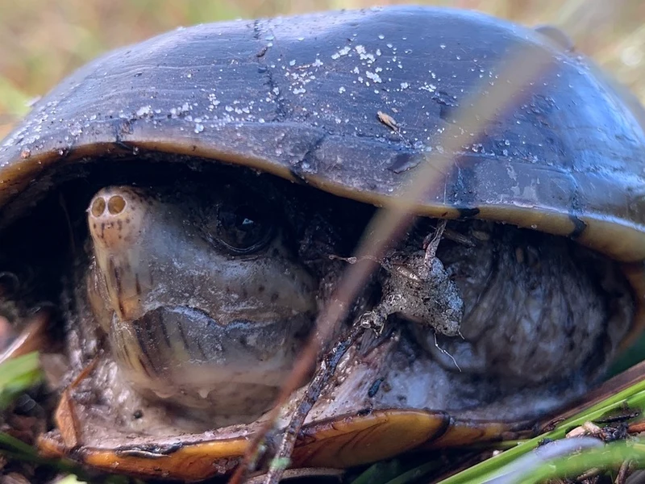

フロリダ半島固有の小型ドロガメ。トウブドロガメの亜種で外見は似るが、甲羅色が黒ずんでいる個体が多い。省スペース・小型水槽で飼育できる丈夫な種。

1年後の甲長は7〜10cm程度。フロリダの亜熱帯的な温暖な環境に適応しており、他のドロガメより水温変化への耐性が比較的ある。浅い水底を歩き回る底生行動が主体で、乾季には陸に上がる習性がある。採食時に活発になる傾向があり、食事の時間が観察のハイライトになりやすい。
10年後は甲長10〜13cm、重さ200〜380g程度が多い。30〜45cm水槽で安定して飼えるサイズ感。20〜30年の寿命があり、陸場への上陸習性に対応した環境設計が長期飼育の安定につながりやすい。
フロリダドロガメは底生種で、健康な個体でも水底でじっとしていることが多い。泳ぎ回る水棲ガメのイメージで飼育すると「動かない＝病気」と誤解しやすい。底でじっとしている状態が本来の行動であることを最初に把握しておくと、不要な心配や過剰なハンドリングを避けられる。定期的な食欲確認と水質チェックが健康管理の実践的なポイントになりやすい。
フロリダ半島全域の浅い沼沢・湿地・排水溝にまで適応。温暖な気候に適応しており、水温変化への耐性がある。雑食性で藻類・水生昆虫・小型無脊椎動物を食べます。
底生傾向が強いため、底砂に軽く潜れる程度の深さ（2〜3cm）の大磯砂または田砂が適しています。
← 横にスクロールできます
| 種名 | 甲長 | 難易度 | 必要水槽 | 特徴 |
|---|---|---|---|---|
| フロリダドロガメ このページ | 9〜12cm | 入門〜中級 | 30〜45cm | 本種・フロリダ固有 |
| トウブドロガメ | 9〜12cm | 入門 | 30〜45cm | おとなしい |
| ミスジドロガメ | 9〜12cm | 入門〜中級 | 30〜45cm | 縦縞模様 |
| ニオイガメ | 10〜14cm | 入門 | 30〜45cm | 最定番入門 |
機材を揃える前に適性診断で確認。100種対応のツールで、あなたの生活環境に合う種も確認できます。